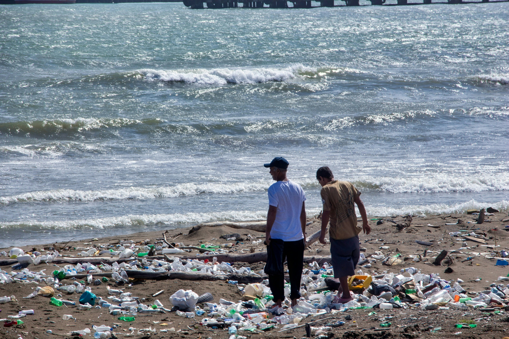
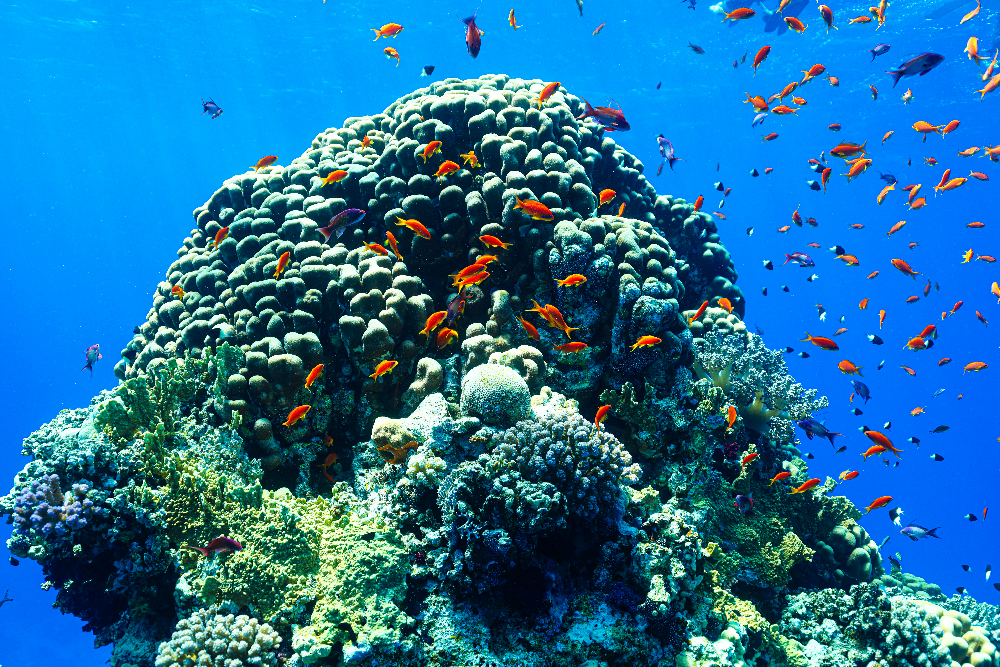
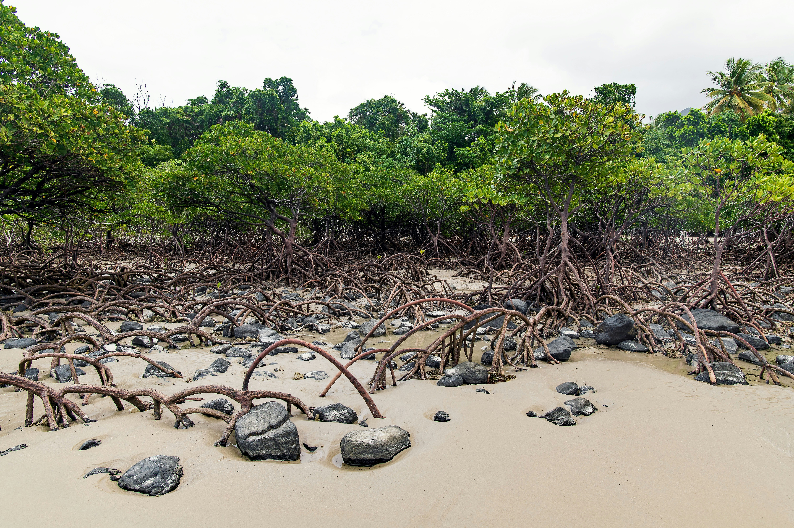

Laut menyerap hampir separuh emisi karbon dioksida dan menghasilkan sebagian besar oksigen yang kita hirup. Sekarang giliran kita menjaganya
Laut menutupi sekitar 70 persen permukaan bumi dan menyerap lebih dari 90 persen panas berlebih akibat gas rumah kaca.
Fitoplankton dan tumbuhan laut menghasilkan sedikitnya separuh oksigen yang kita hirup.
Sampah plastik mencemari perairan, lautan yang menghangat merusak terumbu karang, dan hutan mangrove yang melindungi garis pantai terus menyusut.

Jutaan ton plastik masuk ke laut setiap tahun dan membahayakan satwa laut serta manusia.
Baca Selengkapnya
Suhu laut yang naik membuat karang kehilangan warna, makanan, dan akhirnya mati.
Baca Selengkapnya
Alih fungsi lahan mangrove menjadi tambak membuat air laut naik dan mengancam pemukiman warga terendam banjir rob.
Baca Selengkapnya